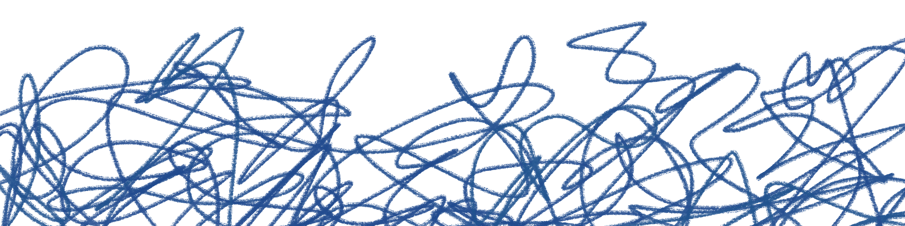

Végre úgy érzed, hogy sikerül valakihez igazán közelebb kerülnöd, és ez rövid időre megnyugvással tölt el téged. Közben viszont végig ott van benned az érzés, hogy ez a kapcsolódás bármikor meginoghat, mert semmi sem tűnik elég stabilnak ahhoz, hogy biztosan megmaradjon.
Lapozz a X. oldalra és a felbukkanó lehetőségek közül válassz egyet!
